透明水彩ミニパレットを作る会⸻今日からはじめられる透明水彩の第一歩
夏休み企画「透明水彩ミニパレットを作る会」を開催します。 「透明水彩をやってみたいけれど、何を買えばいいのかわからない。」 そんな方に向けた夏休み企画です。 …

“人”としてともに生きる時間⸻イラストレーターがいる日

“人生”を物語にする⸻りさこっこの ちいさなえほん会
毎月、「りさこっこの ちいさなえほん会」というちいさな会を開いています。その会では、世界に1つだけの絵本をつくるワークショップを開催しています。「あなたを ち…
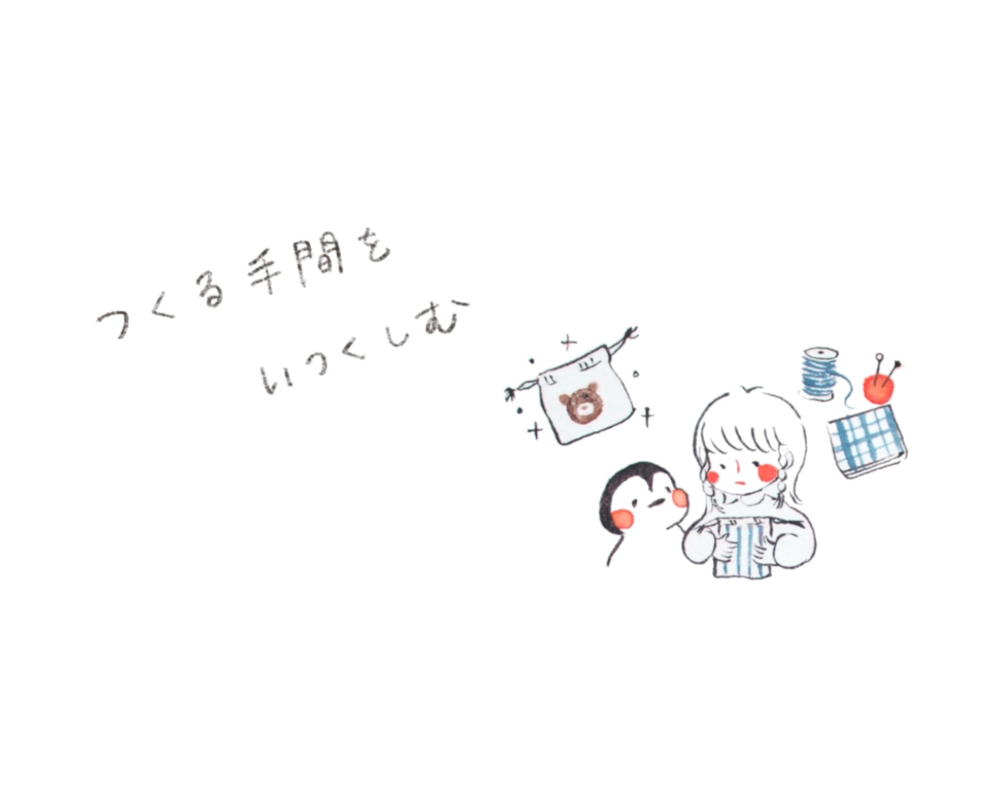
「これ買って！」より「これ作って！」って言ってほしい⸻娘と私のてづくり記録
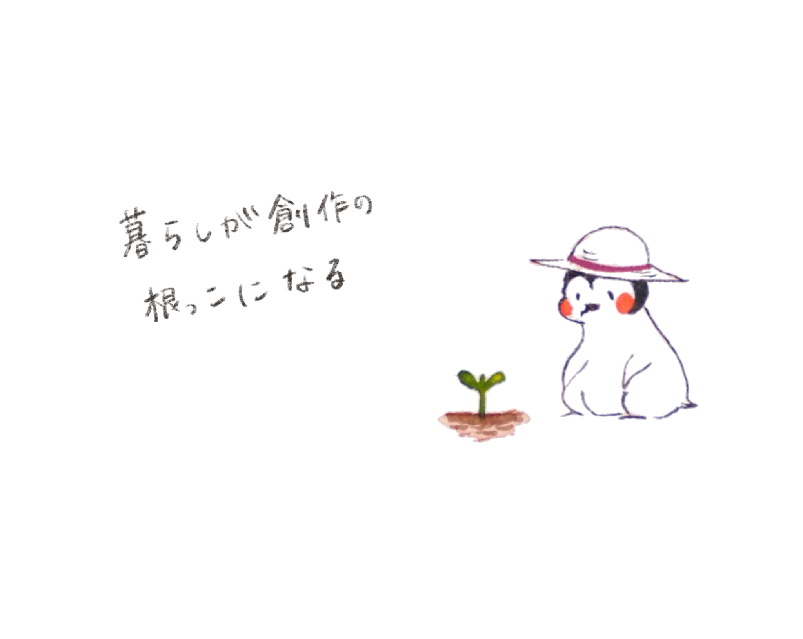
生きることは育てること──ラディッシュ収穫から感じたこと
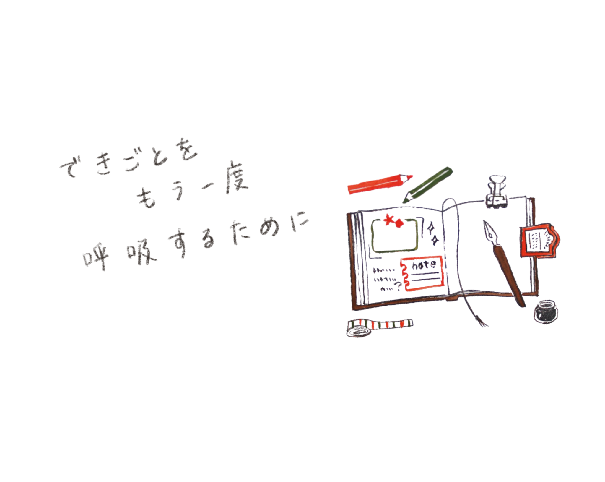
物語として記録する、りさこっこのグラフィックレコーディング
この記事は2026年1月のアーカイブです。 今回の記事では、 私が描いている「グラフィックレコーディング（グラレコ）」についてご紹介します。 グラフィック…
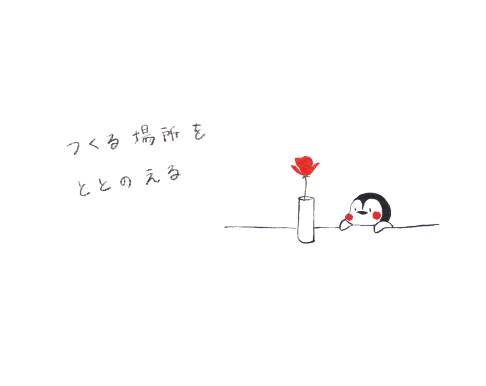
余白のあるアトリエにしたら、物語が息をしはじめた
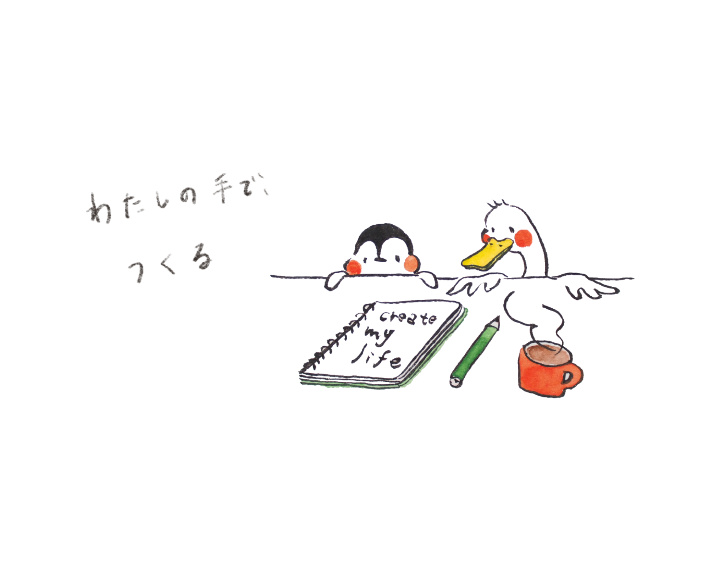
“数”を手放し、「作る」を取り戻す —— 創作と暮らしを見つめた2025年
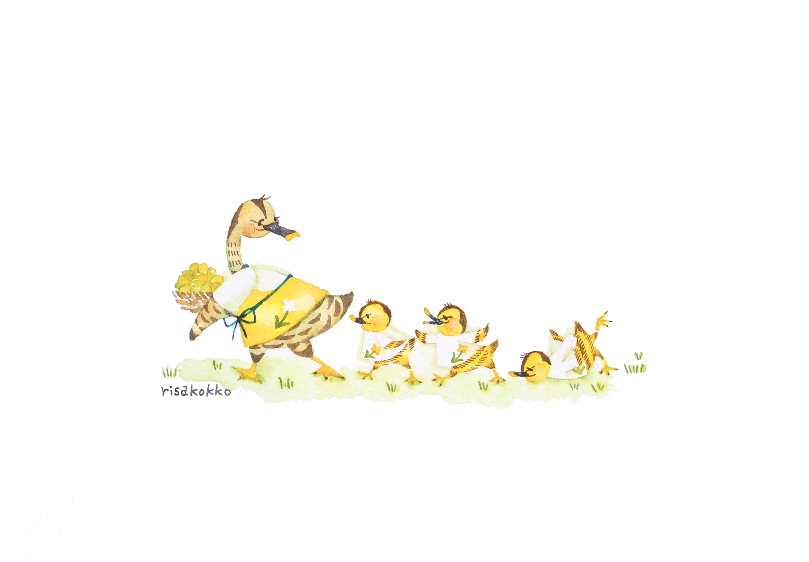
まちと人がやさしくつながる絵本をつくる〜『まこがもさんの しあわせ じょさんいん』制作のおはなし〜
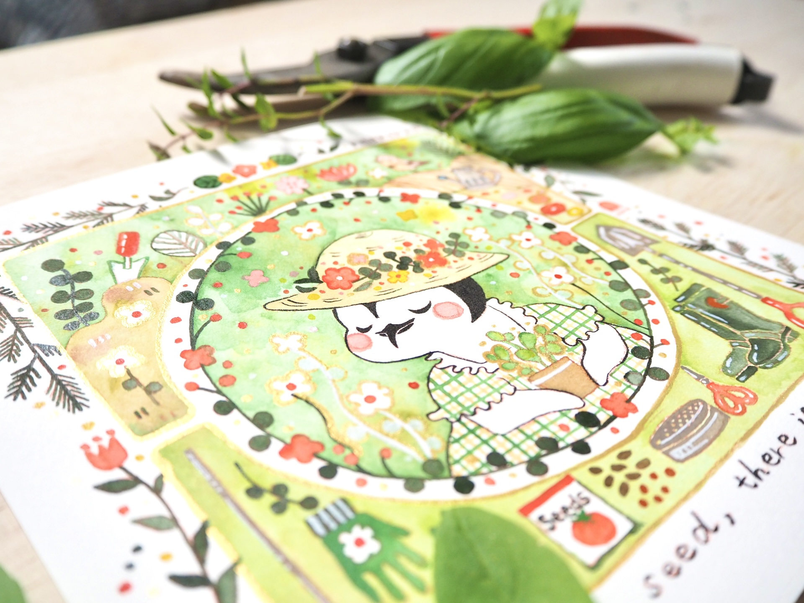
すべての種には夢がある｜暮らしを育てるということ
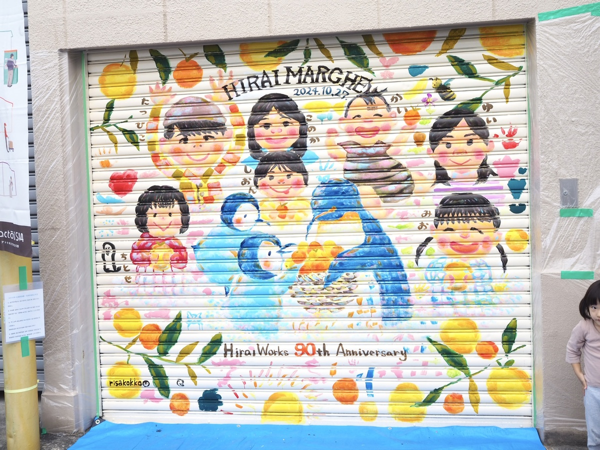
シャッターアート＠平井製作所さん
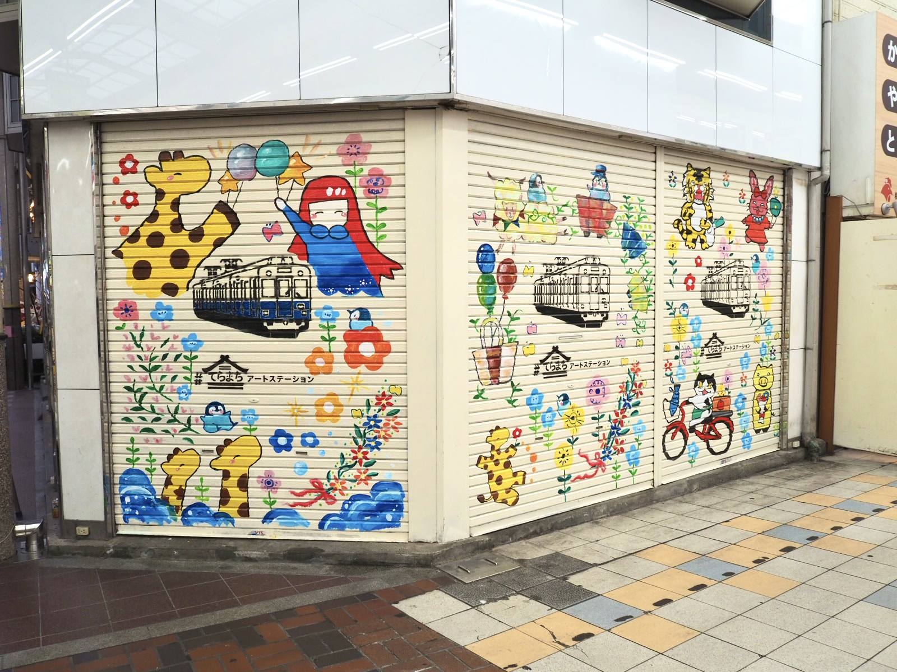
シャッターアート「わくわくする商店街」

シャッターアート「ペガサス」
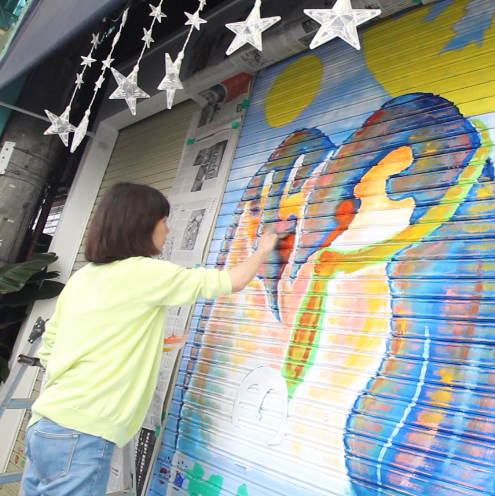
シャッターアート「太陽が似合う町、太陽が似合う家族」
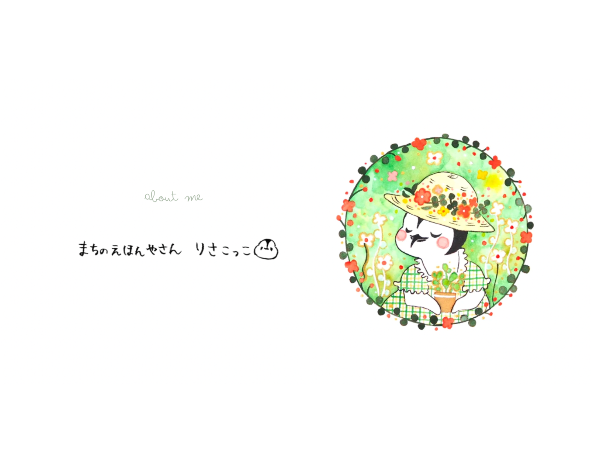
はじめまして 〜 about me 〜